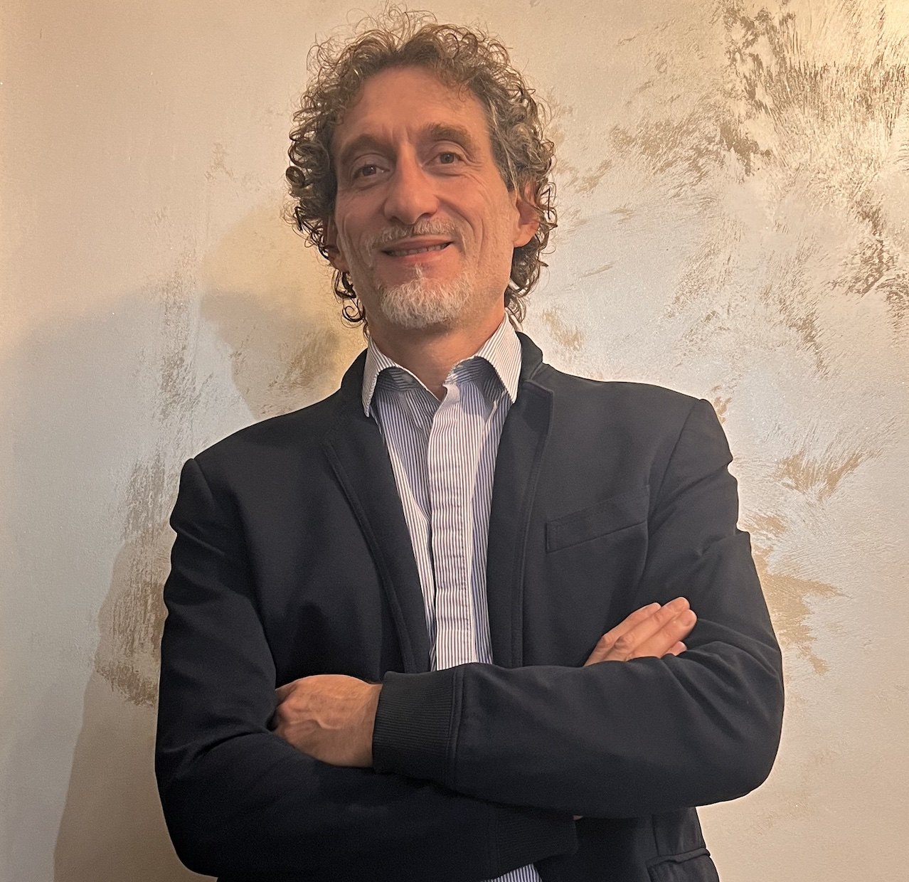

Prof. Paola Inverardi
I'm a Computer Scientist and Rector of the Gran Sasso Science Institute
About
Paola Inverardi is a full Professor in Computer Science at the Gran Sasso Science Institute, where she has served as Rector since September 2022. She previously worked at the IEI-CNR Institute in Pisa and the Olivetti Research Center in Pisa. Since 1994, she has been a full professor at the University of L'Aquila, where she has held the positions of Undergraduate Chair, Department Director, and Dean of the Faculty of Mathematical, Physical, and Natural Sciences. From October 1, 2013, to September 30, 2019, she served as Rector of the University of L'Aquila. Paola Inverardi's research area is software engineering.
Summary
Paola Inverardi
- Via Michele Iacobucci, 2 - 67100 L'Aquila (Italy)
- paola.inverardi@gssi.it
Education
Laurea Degree in Scienze dell’Informazione
1981
Università di Pisa, Italy
Current and Previous positions
Rector and Professor of Computer Science of GSSI, Italy
2022 - now
Professor of Computer Science University of L’Aquila, Italy
1994 - 2022
Rector University of L’Aquila, Italy
2013 - 2019
Dean, Faculty of Mathematical, Physical and Natural Sciences
2008 - 2012
Founder & Director, Computer Science Department, University of L’Aquila
2001 - 2007
Researcher at IEI-CNR, Pisa Italy
1984 - 1994
Researcher at Olivetti-DIDAU Research Center Pisa, Italy
1981 - 1984
Institutional Responsibilities
Rector
2022 - now
In 2022, I was elected Rector of Gran Sasso Science Institute
Rector
2013 - 2019
In 2013, I was elected Rector of the University of L’Aquila
G20 Sherpa for the Ministry of Research
2021
National Representative Governing Board for The European High Performance Computing Joint Undertaking (EuroHPC JU)
2019 - now
Member of the Scientific Council of the National Research Council (CNR)
2022 - now
Member of the Executive Committee of the Istituto Italiano di Tecnologia (IIT)
2024 - now
Member of the Scientific Technical Committee of the National Cybersecurity Agency (ACN)
2025 - now
Technical advisory to Ministry of University & Research, G20 research strategy
2021
Past National Deleg. for H2020-ICT Committee. In different periods from 1994 to 2013, I covered the positions of President of the Board of Department Directors, Computer Science Department Director, Director of the DISIM Department, Dean of Faculty, Member of Senate Board at University of L’Aquila.
Fellowships, Awards, and Memberships of Scientific Societies
Fellowships
- ACM Fellow
- IFIP Fellow
Awards
- IEEE TCSE Distinguished Service Award for outstanding and sustained contributions to software engineering community
Doctorates
- Honorary Doctorate Mälardalen University (Sweden)
- Honorary Doctorate Shibaura Institute of Technology (Japan)
Memberships
- Member of Academia Europaea, EU TPC ACM, ACM Fellows Committee
- Past member of ACM Tech Policy Council, ACM Europe Council, ACM SIFSOFT Executive Committee
- Recipient of Premio internazionale Eccellenza Femminile, awarded at the Italian Senate (March 6, 2025)
- Premio Minerva Anna Maria Mammoliti Women for Stem (April 2023)
Research
My research focuses on the application of rigorous methods to the development of high-quality software systems. Over the past decades, my interests have centered on software architectures and self-adaptive or autonomous systems. With the rise of systems that automate user-specific behaviors, the notion of correctness has taken on new dimensions. Privacy and ethical considerations have become critical, and autonomous systems must be designed not to violate them. My recent research explores these ethical concerns from a software engineering perspective. A distinctive feature of my work is the emphasis on improving both the high-level design and the final code quality of software systems. This approach has been enriched through ongoing collaborations with the software industry.
Pioneering Contributions to Software Architecture and Formal Methods
Formal methods
Among the first to systematically connect formal methods with software architecture, producing rigorous techniques for modeling and verifying complex, distributed, and concurrent systems.
Architecture analysis
Advanced behavioral and quantitative analysis of architectures, providing foundations for software reliability, adaptability, and performance prediction.
Software architecture
Recognized internationally as a thought leader in software architecture, influencing both academic research directions and industrial best practices.
Projects
PRIN Projects funded by MUR (Italian MInistry for University and Research)
Robot Choreography (RoboChor)
RoboChor focuses on the service robotics domain and on automated synthesis techniques for realising the choreography, hence programming the robots and coordinating their interaction in a way that the specified mission is accomplished. The choreography specification, beyond the involved robots, considers the humans the robots interact with in the shared space, while accounting for the specified ethical preferences. RoboChor will employ synthesis techniques that, given as input the global mission specification, automatically generate the correct-by-construction logic needed for coordinating the robots and their interactions with humans, as well as the environment, in a way that the specified mission is accomplished in the correct and morally good manner (ethical aspects).
HALO: etHical-aware AdjustabLe autOnomous systems
HALO approaches the challenge by empowering users with a software exoskeleton, which enables users to express their moral preferences and to adjust the system’s autonomy and the related interaction protocols, in an ethical-aware manner. The customization of the system’s autonomy is guaranteed by a software mediator that, depending on the user’s ethical preferences, first determines the new level of autonomy and then (re-)distributes autonomy and control among the involved entities (e.g., system’s components, software agents, humans interacting with the system, etc.). HALO implements a paradigm shift from a static to a ground-breaking dynamic approach for ethically-aware adjustable AS by: (i) providing principles and methodologies for the design of AS that are adjustable, i.e., they offer customization functionalities of their autonomy, and (ii) providing software solutions for empowering the user in order to adjust the system's autonomy to her moral values like, e.g., privacy or dignity.
Ph.D. Students
Current Ph.D. Students
Ziba Assadiri
GSSI PhD program
Irene Mastrodicasa
GSSI PhD program A.Y. 2024/2025
Sadaf Hussain Janjua
GSSI PhD program A.Y. 2024/2025
Gianluca De Ninno
National PhD Program in AI based at and funded by GSSI (Italy)
Beatrice Melis
National PhD Program in AI based at and funded by GSSI (Italy)
Riccardo Corsi
National PhD Program in AI based at and funded by GSSI (Italy)
Past Ph.D. Students
Mauro Caporuscio
Current position
Full Professor, Linnaeus University
Henry Muccini
Current position
Full Professor, University of L'Aquila
Patrizio Pelliccione

Current position
Full Professor, Gran Sasso Science Institute
Massimo Tivoli

Current position
Full Professor, University of L'Aquila
Antinisca Di Marco
Current position
Ass. Professor, University of L’Aquila
Leonardo Mostarda
Current position
Ass. Professor, University of Perugia
Marco Autili

Current position
Ass. Professor, University of L’Aquila
Romina Spalazzese

Current position
Ass. Professor, Malmö University
Amleto Di Salle
Current position
Assistant Professor (tenure track), Gran Sasso Science Institute
Mai Abusair
Current position
Assistant Professor (Palestine)
Marco Castaldi
Current position
Cegeka (Italy)
Fabio Mancinelli
Current position
Senior System Development Engineer - Intelligent Cloud Control, Amazon (France)
Sharareh Afsharian
Current position
Ericsson (Italy)
Paolo Di Benedetto
Current position
Ministero di Grazia e Giustizia (Italy)
Marco Mori
Current position
Banca d’Italia (Italy)
Gian Luca Scoccia
Current position
Assistant Researcher, Gran Sasso Science Institute (Italy)
Patrizio Migliarini
Current position
Post-doc, University of L'Aquila (Italy)
Costanza Alfieri
Current position
Post-doc, University of L’Aquila
Pubblications
A complete list of publications can be found on Scopus or Google Scholar.
Some recent publications
A reference architecture for ethical-aware autonomous systems
Journal of Systems and Software (2026)
Ethics Label for Digital Systems to Promote Transparency and User Awareness
Journal of Systems and Software (2025)
Advancing Automated Ethical Profiling in SE: a Zero-Shot Evaluation of LLM Reasoning
IEEE/ACM International Conference on Automated Software Engineering, ASE (2025)
RobEthiChor: Automated Context-aware Ethics-based Negotiation for Autonomous Robots Author links open overlay panel
Journal of Systems and Software (2025)
fRAme: An evaluation framework for human augmentation or replacement by autonomous intelligent systems
Forthcoming in AI & Society (2025)
Engineering digital systems for humanity: A research roadmap
ACM Trans. on Software Engineering and Methodology 34 (5), 1-33 (2025)
Exploring user privacy awareness on GitHub: an empirical study
Empirical Software Engineering 29 (6), 156 (2024)
Leveraging privacy profiles to empower users in the digital society
Automated Software Engineering 31(1): 16 (2024)
Social, Legal, Ethical, Empathetic, and Cultural Rules: Compilation and Reasoning
AAAI 22385-22392 (2024)
Systematic review on privacy categorisation
Computer Science Review, Volume 49, 2023, 100574, ISSN 1574-0137 (2023)
Enhancing Trustability of Android Applications via User-Centric Flexible Permissions
IEEE Transaction on Software Engineering (2021)
The European perspective on responsible computing
Communication of the ACM 62(4), 64 (2019)
Automated synthesis of application-layer connectors from automata-based specifications
Journal of Computer and System Sciences (2019)
Achieving functional and non functional interoperability through synthesized connectors
Journal of Systems and Software (2016)
Research monographs and book chapters
I authored the following book chapter
The Challenge of Human Dignity in the Era of Autonomous Systems
Springer Perspectives on Digital Humanism, 25-29 (2022)
and (co-)authored the following research monographs and book chapters
Model-Based Software Performance Analysis
Springer 1-190 (2011)
The Notion of Self-aware Computing
Springer Self-Aware Computing Systems, 3-16 (2017)
Self-aware Computing Systems: Related Concepts and Research Areas
Springer Self-Aware Computing Systems, 17-49 (2017)
Keynotes
The core property of ethical aware Autonomous Systems: Adaptation
IEEE/ACM International Conference on Automated Software Engineering, ASE (2025)
Contact
Address
Via Michele Iacobucci, 2 - 67100 L'Aquila
paola.inverardi@gssi.it